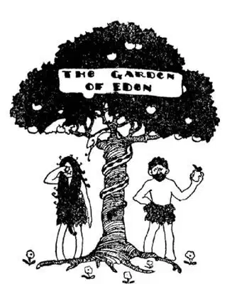
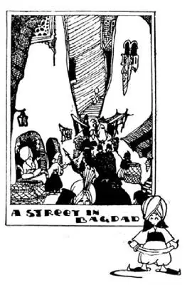

52
The Garden of Eden
伊甸园

OF course, you have heard of the Garden of Eden, haven’t you? When-I-was-a-boy I thought that when I was old enough to travel I should like to go and see it for myself. I should like to see whether or not the angels with fiery swords were still there. So I asked my Sunday school teacher where the Garden of Eden was. “It’s in the Bible,” said she. That didn’t help me much. But grown-up people have been looking for the Garden of Eden for a great many years and some say they have found it, or rather that they have found the place where it once was, for it does not look like a garden now, much less like a Paradise.
If you were in Damascus and asked a man on the street, “How do you get to the Garden of Eden?” he might think you were crazy, or maybe he might say, “I’m a stranger here myself.” But if he did know the way, he would point to the east and say, “You cross the desert and keep going straight ahead toward the rising sun. In about a month, if you are going by camel, or in a couple of days, if you are going by automobile, you will come to a muddy river. This river is called the Euphrates. Cross the Euphrates and go on a short distance and you will come to a second muddy river. This second muddy river is called the Tigris. These two rivers flow into each other, and near the place where the two rivers join, there you’ll find the Garden of Eden. You can’t miss it.”

伊甸园
Some say they have found the Garden of Eden
有些人说他们找到了伊甸园
There is no garden there now and you may wonder how there ever could have been a garden there, for most of it is now mud, and, when there has been no rain for a long time, just baked mud ground, which looks as little like a Garden of Eden as you could possibly imagine. Nevertheless, people think this is where the Garden of Eden once was. They even point out an old apple-tree that once bore some apples and say, “That’s the original tree.” They think the Great Flood took place between these rivers. They think that Noah lived down there somewhere, that he built his ark down there, and that the Flood came and flooded all this valley between the two rivers, and when the Flood was over, the Ark was left high and dry on the top of Mount Ararat, a mountain way up above where the rivers rise. This valley between the two rivers was called Mesopotamia, because “Meso” means “between” and “potamia” means “rivers.” But it is now called Iraq, and that is the name you will see on the map.
On the Tigris River, high up, there used to be a big city called Nineveh, and on the Euphrates, farther down toward where the two rivers meet, there used to be another big city called Babylon. I say “used to be,” for although these two cities were the largest cities in the World before Christ was born, they have almost completely disappeared.
Have you ever built on the beach or in a sand pile a town of houses and streets and then some big bully has come along, tramped on it, stamped on it, and kicked it to pieces? Well, Nineveh and Babylon look as if some giant had come along and stamped all over them and kicked them all to pieces, for about all there is to be seen of them now are piles of dirt. Men have been digging in the piles for many years and they have found buried under the dirt some of the things the people of these cities once had in their homes and shops and schools and palaces, for these cities had some of the finest houses and palaces ever built. The walls and gardens of Babylon were once one of the Seven Wonders of the World, but practically nothing is now left of them.
Though Nineveh and Babylon are gone—their names are not even on the map—there are to-day two big cities on the Tigris that are very much alive, with people living in them. One of these cities is just across the river from where Nineveh used to be. It is called Mosul. You know what muslin is, don’t you? Well, muslin was first made in Mosul, so this kind of cloth was called “Mosulin,” which became muslin.
Not many years ago people discovered oil in the country round Mosul, enough oil to run all the automobiles in the World. The difficulty was to get the oil to the automobiles. Pipe lines were built from the oil wells to the Mediterranean Sea miles away. The oil is pumped through the pipes and then is loaded on ships. The ships are really floating tanks and so are called tankers. The tankers carry the oil to America and to Europe.
Mosul is a Moslem town. On the great mosque there is a minaret that leans, something like the Leaning Tower of Pisa. People say that Mohammed was once passing this minaret and it bowed to him and was never able to get entirely straight again—it’s still leaning.

巴格达的大街
Puzzle: Find Ali Baba and the 40 Thieves
猜谜：找一找阿里巴巴和四十大盗
Have you ever read the stories of Ali Baba and Sindbad the Sailor? Down the Tigris River below Mosul is another big city called Bagdad. The people you see there on the streets look like the people you see in the pictures in the “Arabian Nights.” Bagdad in summer is one of the hottest places you can imagine. It is sometimes 125°, and you know that 100° is about as hot as we can stand. The streets used to be like narrow alleys, dirty and smelly. But after World War I, England ruled over Iraq and Bagdad and the English made great changes. They built a wide street right through the city and called it New Street. They put in electric lights and ice factories which Bagdad had never had before. Then they had the people vote for a king, and Iraq has been a kingdom ever since. It is still under the protection of England, however, and a few Englishmen stay there to help train the army of Iraq.
【中文阅读】
你肯定听说过伊甸园，对不对？小时候，我就想，长大了，能去旅游了，我要去伊甸园亲眼看看。我想看看手执能发出火焰的剑的天使是不是还在那儿。于是，我问主日学校的老师伊甸园在哪里，她说，“在《圣经》里。”这个答案对我并没有多大帮助。但是，很多年以来，大人们一直在寻找伊甸园，而且，有些人说找到了；更确切地说，找到了伊甸园曾经的那个地方，因为那里现在看上去一点都不像一个花园，更不用说像天堂了。
如果你在大马士革，问大街上的一个人，“到伊甸园怎么走？”对方也许会认为你疯了，或者，也许会这样回答你，“我是外地人，对这里不熟悉。”但是，如果他确实知道去伊甸园的路，他会指着东边说，“穿过沙漠，朝着太阳升起的方向，一直向前走。骑骆驼大概要走一个月；开车大概几天就到了。你会来到一条浑浊的河边，这条河叫幼发拉底河。穿过幼发拉底河，再走一会。你就会来到第二条浑浊的河边，这条河叫底格里斯河。这两条河彼此交汇，离交汇处不远，就是你要找的伊甸园，错不了。”
那里现在根本没有花园。你也许还会感到奇怪，那儿过去怎么可能有花园呢？因为那里大部分是泥浆。如果长时间不下雨，就只有被太阳晒成硬邦邦的地面，看起来一点也不像你想象中的伊甸园。虽然如此，人们仍然认为这就是伊甸园曾经所在的地方。他们甚至还指出一棵曾经结过几个苹果的老苹果树，说，“那就是原来的那棵树。”他们认为，《圣经》所说的那场灭世大洪水就发生在这两条河流之间；诺亚就住在那里的某个地方，造好了他的方舟，洪水来了，淹没了两河流域；洪水退后，方舟搁浅在阿勒山山顶上了，这座山高耸在高涨的河水之上。两河流域叫做“美索不达米亚”，“美索”是“在……之间”的意思，而“不达米亚”是“河流”的意思，所以“美索不达米亚”就是“河流之间”的意思。但是现在那里叫“伊拉克”，是你在地图上可以看到 的名字。
底格里斯河上游的岸边曾有一座叫“尼尼微”的大城市；而在幼发拉底河下游的岸边，快到两河交汇的地方，也曾有过一座叫“巴比伦”的大城市。我说“曾有过”，是因为这两个城市现在几乎完全消失了，尽管在耶稣出生之前它们都是世界上最大的城市。
你有没有在沙滩上或沙堆上建过一个小镇，有房子，有街道，这时出现了一个大坏蛋，他欺负你，对着你的小镇，又是跺、又是踩、又是踢，把它毁得粉碎？尼尼微和巴比伦看上去就好像有个巨人来了，把两个城市整个踩踏一遍，然后又将它们踢得粉碎，因为在那儿你所看到的这两个城市遗迹不过是一些泥土堆。多年来，人们一直在这些土堆里挖掘，发现了一些深埋在泥土下的东西。这些东西都曾在以前城里人家里、商店里、学校里和宫殿里，这两个城市曾拥有世界上最漂亮的房子和宫殿。巴比伦的城墙和花园曾经是世界七大奇观之一，但是现在却几乎什么也没有留下。
尽管尼尼微和巴比伦已经不存在了——连它们的名字在地图上也找不到，但是现在，在底格里斯河河边，有两座生气勃勃的大城市，很多人居住在里面。其中一个城市就与尼尼微曾经所在的地方隔河相望，叫做“摩苏尔”。你知道，细平布是什么，对吧？细平布最初就是在摩苏尔生产出来的，所以这种布起先以产地命名为“摩苏尔布”，后来叫做“细平布”。
不久前，人们在摩苏尔附近发现了大量的石油，足以满足全世界汽车的需求。问题是如何将石油运走，提供给汽车。人们在油井和数英里之外的地中海之间铺设了输油管道。石油被泵抽出来，通过管道装到船上。这些船实际上就是漂浮的油箱，所以它们被称作“油轮”。油轮将石油运到美洲和欧洲。
摩苏尔是一个穆斯林城市。在大清真寺上有一个倾斜的宣礼塔，有点像比萨斜塔。据说，穆罕默德曾经经过这个宣礼塔，宣礼塔向他鞠了个躬，就再也挺不直了——它现在还是倾斜的。
你读过《阿里巴巴》和《水手辛巴达》的故事吗？沿底格里斯河向下走，在摩苏尔下方还有另一个大城市，叫巴格达。你在巴格达街道上遇见的人看起来就像《一千零一夜》书里图画中的人。夏日的巴格达是你能想象到的最热的地方，有时，气温高达华氏125度，你知道，华氏100度是我们能忍受的最高温度。过去巴格达的街道像狭窄的小巷，又脏又臭；但是第一次世界大战之后，英国统治了伊拉克和巴格达。英国人让这里产生了很大的变化，他们修建了一 条宽阔的大街，称为“新街”，它正好穿过这个城市，还引进了巴格达人未见过的电灯和制冰厂。然后，英国人让巴格达人投票选举了一位国王，从此之后，伊拉克就是一个王国了。不过，伊拉克现在还受英国保护，有些英国人待在那儿帮助训练伊拉克军队。